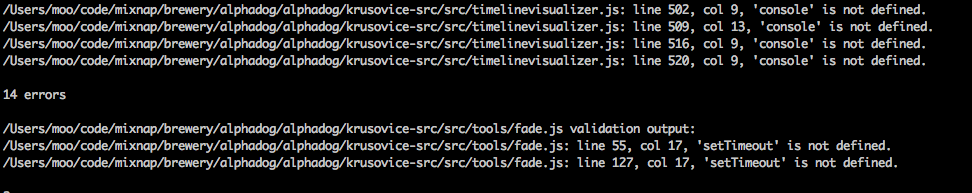

VVV package provides command vvv-add-js-globals which can be used to batch add /* global */ hints to Javascript files. The tool is designed to situations where you adapt linting practices to your project and several JS files are in dire need of updating.
Above is an example screenshot of a sad, but normal situtation when adapting a linter. However, the situation is was not incurable.
vvv-add-js-globals:
Warning
Use carefully. The tool operates on text lines only and does not parse Javascript. It may break Javascript files if used
Use with find UNIX command.
Active VVV virtualenv first:
. ~/vvv-venv/bin/activate
Example how to scan the current source tree add add /* globals jQuery, $ */ in every file:
find . -iname "*.js" | xargs vvv-add-js-globals "$, jQuery"
Another example - add console global to all JS files under tests:
find tests -iname "*.js" -print -exec vvv-add-js-globals "console" {} \;
Another example - add console global to all JS files in the source tree, but exclude files in thirdparty/ folder:
find . -iname "*.js" -not -path "*thirdparty*" -print -exec vvv-add-js-globals "console" {} \;